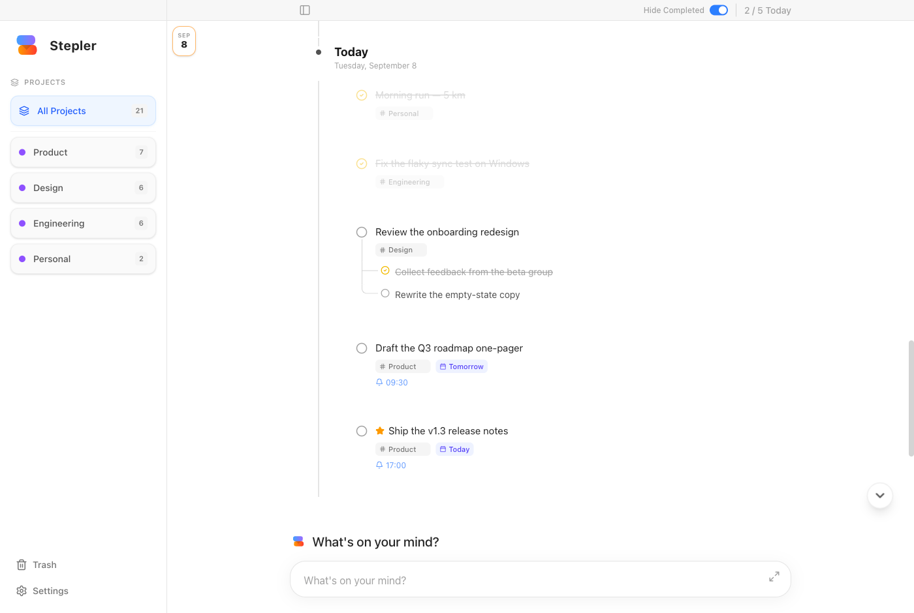

A daily timeline
Today sits at the bottom next to the composer. Finished days roll into history above it, in the order you actually lived them.
Today's work sits at the bottom of the window, right next to the box you type into. Finished days roll up into history above it. Nothing else gets in the way.
v1.3.5 · Apple Silicon & Intel · free and open source · all releases
macOS may say “Stepler is damaged and can’t be opened”, or simply do nothing. It is not damaged — anything downloaded from a browser is quarantined, and Stepler is signed ad-hoc rather than with a paid Apple certificate.
Right-click Stepler in Applications, choose Open, then Open again. Once only: updates installed from inside the app are never quarantined.
Windows shows a blue “Windows protected your PC” screen for any app it has not seen before. Click More info, then Run anyway, and the installer carries on as normal.
Stepler is not yet signed with a paid Microsoft certificate, so SmartScreen has no record of it. Every release is built from the public source in this repository — you can check the code, or build it yourself, before running it.

The whole app: projects on the left, the day's timeline in the middle, and the composer always within reach at the bottom.
Write the thing down, tag it if you feel like it, and get on with your day.
Today sits at the bottom next to the composer. Finished days roll into history above it, in the order you actually lived them.
A global shortcut brings the window up from anywhere, Esc sends it away again. It never becomes a thing you have to go and open.
Tag a note with a project, give it a day, set a time and get a notification when it comes round.
Paste or attach images and documents. They are kept as real files in the data folder, so you can open, copy or save them anywhere.
Task text, subtasks, project names and attachment filenames — all from the keyboard, without lifting your hands.
Restore anything you deleted, or pull a finished note from a past day straight back into today.
Everything lives in a plain folder on your own disk. Writes are atomic and batched, so a crash or a forced quit cannot leave the file half written — and the previous good copy is kept as a backup at every successful start.
Google Calendar, Jira and Apple Reminders are all there if you want them, and all switched off until you turn them on.
stepler-data.json
Tasks, history and trash
stepler-data.backup.json
The last known-good copy
attachments/
Every image and file you attached
stepler-settings.json
Preferences and the local API token
Download it, hit the shortcut, and write down the first thing on your mind.
On Windows, SmartScreen asks first: click More info → Run anyway.